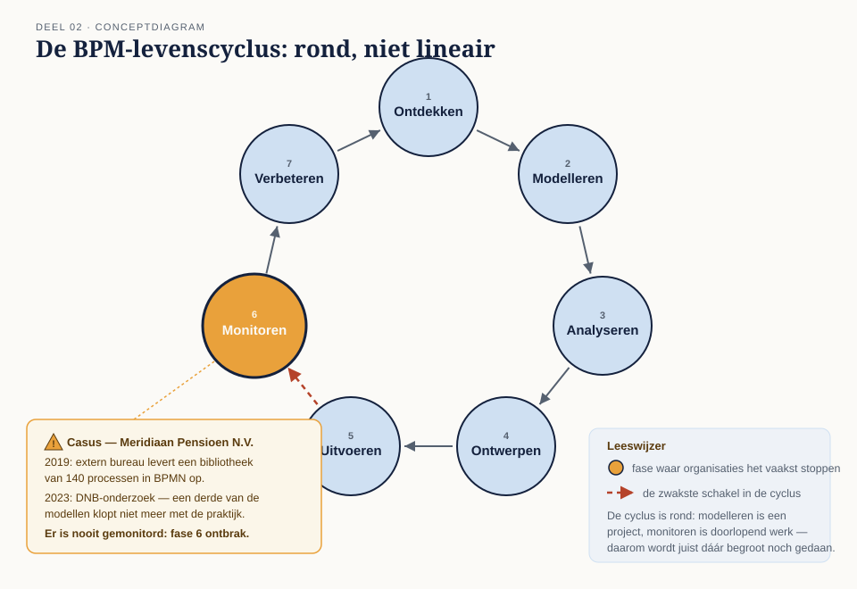
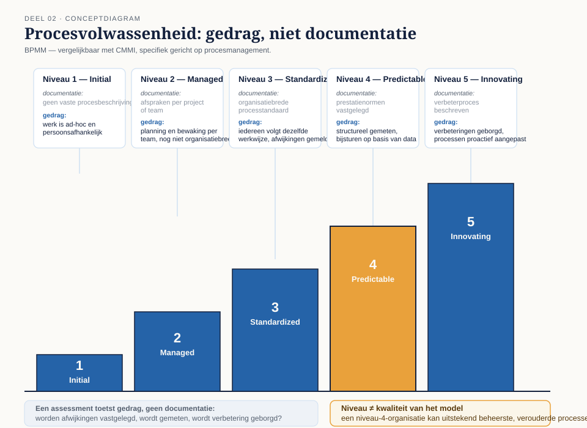

Deel 2 — BPM als managementdiscipline
Slidedeck · Ductus-cursus BPMN, CMMN & DMN · niveau 1 · deel 2 van 30 · 22 slides
Slide 1 — Titelslide
BPM als managementdiscipline — Deel 2
Beeldmerk, cursustitel
Spreeknotitie: Korte terugblik deel 1: drie soorten werk, drie talen. Vandaag: waarom een proces eigenlijk bestaat.
Slide 2 — Leerdoelen
Na vandaag kun je…
Vijf leerdoelen uit de reader
Spreeknotitie: Waarschuw: dit is het examenzwaarste deel van niveau 1, ook al tekenen we niets.
Slide 3 — Zeven fasen
De BPM-levenscyclus

Figuur 2.1 — cyclus met zeven fasen
Spreeknotitie: Benadruk: rond, niet lineair.
Slide 4 — Wat er misging bij Meridiaan
140 modellen, 2019, nooit meer bijgewerkt
Tijdlijn 2019 → DNB-onderzoek, een derde van de modellen niet meer kloppend
Spreeknotitie: De ontbrekende fase: monitoren. Vraag: herkent iemand dit uit eigen ervaring?
Slide 5 — Opdracht 1
Plaats twaalf activiteiten in de cyclus
Werkboekverwijzing, timer 20 minuten
Spreeknotitie: Drie activiteiten zijn bewust meerduidig — laat dat gebeuren.
Slide 6 — Wat is een bedrijfsproces?
De examendefinitie
Drie elementen uitgelicht: samenhangende activiteiten, structuur, waarde voor een afnemer
Spreeknotitie: Deze definitie letterlijk laten terugkomen — staat woordelijk op het examen.
Slide 7 — Drie niveaus van proces
Hoofdproces · ondersteunend · besturend
 Figuur 2.2 — procesarchitectuur in drie lagen
Figuur 2.2 — procesarchitectuur in drie lagen
Spreeknotitie: Eén BPMN-model is één cel in deze plaat.
Slide 8 — Waarom bestaat een proces?
Van visie tot tactiek
Twee kolommen: Ends en Means, nog leeg
Spreeknotitie: Aankondiging: we bouwen dit nu samen op voor Meridiaan.
Slide 9 — Ends
Visie · doel · doelstelling
Kolom Ends gevuld met definities
Spreeknotitie: Kernpunt: een doelstelling heeft een getal én een deadline.
Slide 10 — Means
Missie · strategie · tactiek
Kolom Means gevuld met definities
Spreeknotitie: Kernpunt: strategie is een structurele keuze, tactiek is concreet uitvoerbaar.
Slide 11 — De keten bij Meridiaan
Van "meest betrouwbare uitvoerder" tot één geautomatiseerd proces
 Figuur 2.3 — volledige BMM-keten stap voor stap opgebouwd
Figuur 2.3 — volledige BMM-keten stap voor stap opgebouwd
Spreeknotitie: Bouw dit element voor element op, niet in één keer tonen.
Slide 12 — Influencers en assessment
Wat de keuzes beïnvloedt
Voorbeeld: DNB-toezicht en AVG als externe influencers bij Meridiaan
Spreeknotitie: Kort — dit is achtergrond, geen examenzwaartepunt.
Slide 13 — Opdracht 2
Sorteer tien uitspraken
Werkboekverwijzing, timer 15 minuten
Spreeknotitie: Individueel, klassikaal nabespreken — dit is de examenkern van vandaag.
Slide 14 — Opdracht 3
Bouw je eigen BMM-keten
Werkboekverwijzing, timer 30 minuten
Spreeknotitie: Tweetallen. Loop rond en let op waar de keten breekt — dat is het leermoment, niet de nette invuloefening.
Slide 15 — Wat is volwassenheid?
BPMM — het vermogen om te beheersen

Figuur 2.4 — niveaus met gedragskenmerken
Spreeknotitie: Kernpunt: gedrag, niet documentatie.
Slide 16 — De valkuil
Niveau 3 als doel op zich
Doorgestreepte uitspraak: "wij willen niveau 3 zijn"
Spreeknotitie: Een hoog niveau zegt niets over of het op het juiste proces wordt ingezet.
Slide 17 — Opdracht 4
Schat de volwassenheid van drie afdelingen
Werkboekverwijzing, timer 15 minuten
Spreeknotitie: Plenair toepassen, kort.
Slide 18 — CSF versus KPI
Voorwaarde versus meetbare indicator
Eén CSF met twee bijbehorende KPI's, Meridiaan-voorbeeld
Spreeknotitie: Een KPI zonder norm is geen KPI.
Slide 19 — Leidend versus volgend
Vooruitblikkend of terugblikkend meten
 Figuur 2.5 — meetpunten in een procesmodel
Figuur 2.5 — meetpunten in een procesmodel
Spreeknotitie: Een goede set heeft beide typen.
Slide 20 — Drie verbetermethoden, kort
Lean · Six Sigma · Theory of Constraints
Drie kernbegrippen: waste/flow, variatie/DMAIC, bottleneck
Spreeknotitie: Alleen het raakvlak met modelleren; volledige behandeling is niveau 2.
Slide 21 — Opdracht 5, 6 en 7
Indicatoren ontwerpen · eigen model toetsen · stellingen
Werkboekverwijzing
Spreeknotitie: Opdracht 5 in tweetallen, 6 was huiswerk, 7 plenair als tijd het toelaat.
Slide 22 — Vooruitblik
Deel 3 — we gaan tekenen
Conductus-omgeving, eerste BPMN-elementen
Spreeknotitie: Vraag om vooraf in te loggen; het eerste kwartier van deel 3 is voor de omgeving.